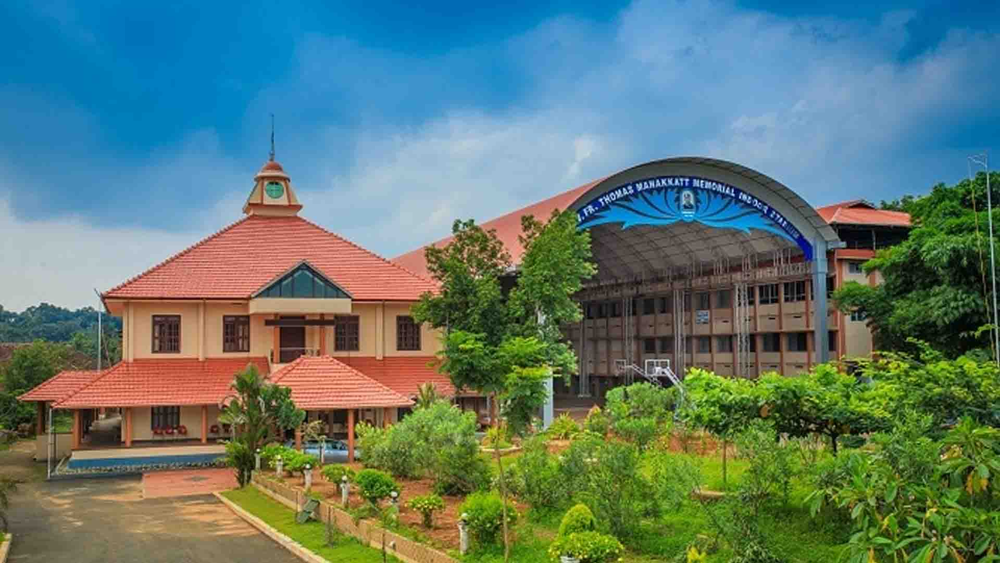

St. George’s College Aruvithura, is a minority educational institution founded by St. George Forane Church, Aruvithura in 1965. Pioneered under the patronage of His Excellency Mar Sebastian Vayalil, the first Bishop of Pala, and cherished by a host of visionaries and philanthropists like Very Rev. Fr. Thomas Araythinal and Mr T. A. Thomman (Former Minister), the college, right from its inception, embarked on an odyssey towards academic pre-eminence. Very Rev. Fr. Thomas Manakkat, the founding manager and a great visionary, was truly instrumental in laying the foundations for a great beginning and Very Rev. Fr. Jacob Thazhathel, who followed him, was equally adept and insightful in his ideals, guiding the college during the early stages of its growth. For more than two decades, His Excellency Mar Joseph Pallickaparampil, the Bishop of Pala, had been the patron of the college. His Excellency Mar Joseph Kallarangattu is the present patron of this seat of learning.
Currently, the college offers 17 undergraduate courses, and 5 postgraduate courses and the Department of Chemistry and Physics are recognized Research Centers under MG University.
The library at St. George's College, Aruvithura, has a rich history, having started functioning in 1965. Over the years, it has undergone significant upgrades and expansion to become a first-grade library. In 1978, the post of a first-grade Librarian and a IV-grade librarian were sanctioned, indicating the growing importance of the library as a vital academic resource.
Today, the library has a vast collection of resources to support the academic programs of the college. There are 32,330 books available on various subjects, including literature, science, technology, history, and philosophy. The library also has 58 periodicals, 250 CDs, and access to 8 newspapers, providing students and staff with access to the latest research and developments in their fields of interest.
In addition to the regular collection, the library also provides resources specifically for academic support programs. 400 books are allotted for Walk with Scholar Programme and Scholar Support Programme. The library is a member of the National Digital Library of India (NDLI) and provides access to the NLIST facility, which provides access to electronic resources, including books, journals, and databases.
The library is equipped with computers and provides internet access to students and staff, making it easy for them to search for academic resources and research materials online. The library also offers repographic facilities, allowing students to make copies of materials that they need.
To facilitate easy access to its vast collection, the library uses an Online Public Access Catalogue (OPAC). Users can search for books, journals, and other materials using the OPAC, making it easy to locate and retrieve resources.
At St. George's College, Aruvithura, the library is a valuable resource for the academic community. Its collection of resources, including books, journals, and electronic resources, provides a wealth of knowledge to students and staff. The library's commitment to providing access to the latest research and developments in different fields ensures that it remains a vital component of the college's academic programs.
Online public access catalog (OPAC) at the library holds details of materials held by SGC Library. It can be accessed at